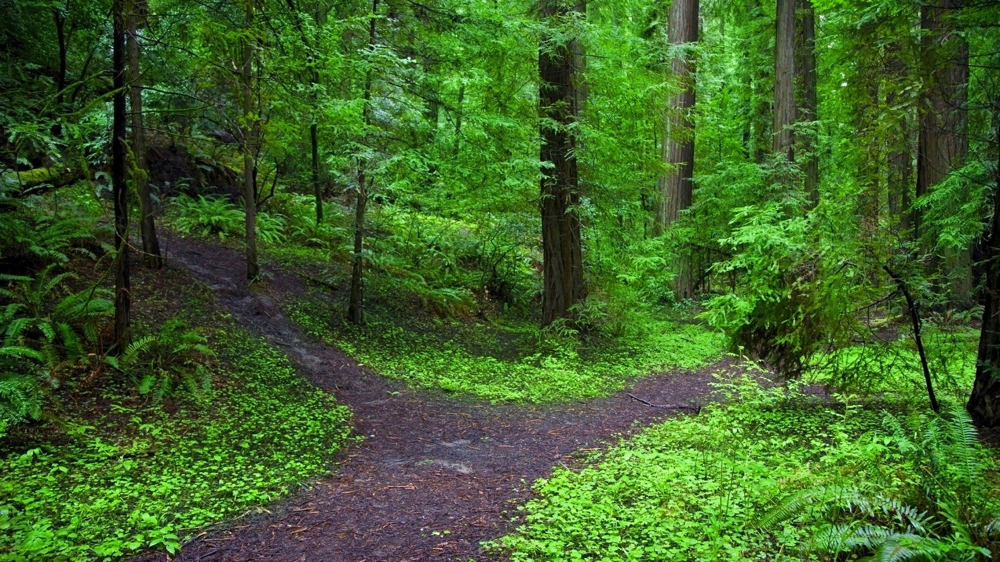

You're in the middle of brushing off your clothes, having found them covered with dirt. Your pocket feels heavy, but the voice rings out before you can investigate, and so you lift your head up quickly and alarmed, looking around wildly for the source of the voice. The voice laughs, an echoing sound that shakes the leaves on the trees and rustles the grass, rattling inside your ribcage uncomfortably.
The voice laughs eerily at you, sending cold shivers down your spine.
It feels like someone's walking on your grave
You spin around three times, but no person is coming forth. The Guardian chuckles again.
You hesitantly offer your name up, and the Guardian makes a pleased hum that weighs on your shoulders, and falls silent.
Now that there is no creepy voice crooning in your ear, you can finally take stock of your surroundings. A bit warily, you look down at yourself, and see that you are wearing the same clothes you had on this morning.
You don't really care about that, though. You're more concerned about what is in your pockets. You reach into your pocket, and are suddenly aware of how... silent the forest is. There are no birds chirping merrily, or the sound of sudden wind gusts. In fact, everything is unnervingly silent.
Your heart begins to thud against your chest, an overwhelming urge to just... leave envelops you whole. Your fists clench involuntarily.
Something sharp digs into your palms.
You blink, and the mood vanishes. The forest is still eerie and silent, but, you don't panic anymore. Instead, you bring your hand out of your pocket, slowly uncurling your hand to stare at what hurt you.
In your hand you hold five... teeth (and oh, oh no, your breathing picks up because where did you find the teeth had they always been there they couldn't have gotten there unless you grabbed them but why did you grab them did someone else grab them but why give them to you or maybe you had them already they're dry and the blood is dry and it's not peeling off--)
The voice of the Guardian calms you down, and you're able to focus on something other than the gleaming gnarled teeth. The Guardian starts humming, the heavy timbre drowning out the panicking voice in your head. You feel grateful.
Your able to look down without wanting to vomit, and you furrow your brow, because you have a long, thin white... bone. You have a bone in your pocket.
The Guardian hums louder, melting down the blood pumping in your head, and robotically you look down at your final item.
A pen.
You laugh, giddy and lightheaded on the knowledge that you have something so mundane as a pen in your pocket.
Why are you helping me? you wonder out loud, glancing mistrustfully at the sky. This is a trap, isn't it? You're going to lure me away and then kill me.
There is a long, heavy silence, until the Guardian pipes up, voice low sibilant as the words curl around the air and squeeze your throat.
You decide not to say anything, letting the silence stretch oppresively long as you ponder the scene in front of you.
You walk right. You walk left. 